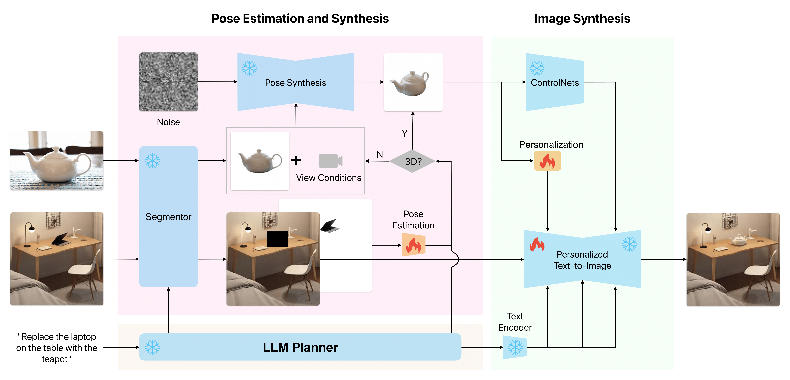
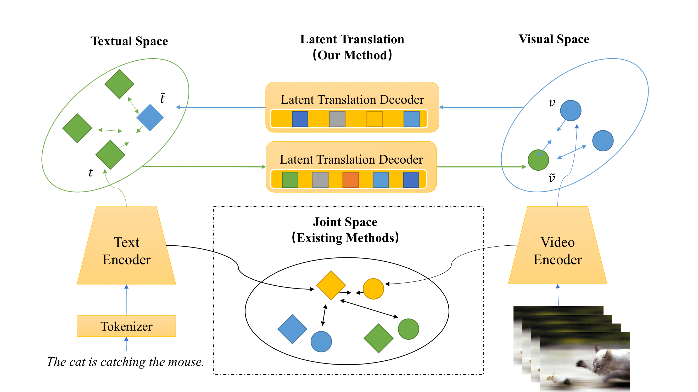

Jinbin BaiThis is Jinbin Bai, a graduate student in Artificial Intelligence Specialization at National Univeristy of Singapore (NUS). Before that, I received the B.S. degree in Computer Science from Nanjing University. I am working on controllable conditional image and video synthesis. And my long-term vision is to pioneer assistive techniques that empower artists and designers in crafting a more elegant and enriched life. And before that, I have research experience in self-supervised learning, video representation, video-language pre-training and image translation. I am looking for a Ph.D. position starting from 2024 Fall. Email / Scholar / Github / Hugging Face |

|
News
- 2023-08 One paper accepted by BMVC 2023.
- 2023-07 Two papers accepted by ACM MM 2023.
- 2023-07 Two papers accepted by ICCV 2023.
- 2023-06 Taming Diffusion Models for Music-driven Conducting Motion Generation accepted by AAAI 2023 Summer Symposium, with Best Paper Award.
- 2023-05 One paper accepted by ICIP 2023.
- 2023-02 Translating natural language to planning goals with large-language models now on arxiv.
- 2022-11 One paper accepted by ACCV 2022.
- 2022-06 LaT: Latent Translation with Cycle-Consistency for Video-Text Retrieval rejected by ECCV 2022, and now on arxiv.
- 2021-03 Awarded as Outstanding Graduate by Nanjing University.
- 2019-03 Awarded as Outstanding Student by Nanjing University.
Professional Services
- Reviewer: ECCV 2022, ACCV 2022, CVPR 2023, ICCV 2023, ACM MM 2023, EMNLP 2023, ICASSP 2024
- Program Committee Member: AAAI 2023, AAAI 2024
Selected Publications
|  |
|
||
|  |
|
||

|
|
Friends
- Tian Ye, RA@HKUST(GZ)
- Zhimeng Guo, Ph.D. Student@Penn State University
- Qilong Wu, MSCS@UIUC, BSCS@NJU
Miscellaneous
- Many deep learning researchers choose research over classes prematurely. In my view, attending classes is akin to cultivating inner strength and broadening one's breadth of knowledge, while research merely pertains to external skills. You may be interested in courses I've taken.
- I am a huge fan of Cities: Skylines and I love designing and simulating cities. I can't wait for the release of Cities: Skylines II on Oct 24th, 2023!
Last updated on Nov. 2022